Harvest models and silvicultural treatments
SIMANFOR includes a comprehensive suite of harvest and thinning models applicable to both individual-tree projections and stand-level (aggregate) models.
Silvicultural interventions are defined through the simulator's Scenarios, allowing users to evaluate the impacts of varying thinning intensities and regimes on each individual tree, the stand, and all calculated variables.
Harvest models, criteria and thinning intensity
Every thinning intervention in SIMANFOR is defined by selecting a harvest model (apply thinning), associated with a thinning criterion (type) and a thinning intensity (percent):
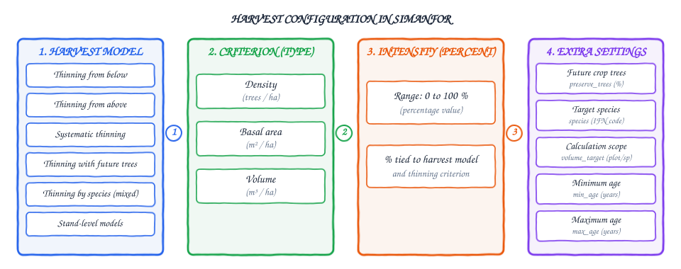
-
Available harvest models (
apply thinning):- For individual tree models:
- Thinning from below
- Thinning from above
- Systematic thinning
- Semi-systematic thinning (as a combination of the above, see details in Semi-systematic thinning)
- Thinning (from below, from above or systematic) by species (mixed stands)
- Thinning (systematic or from above) with future crop trees
- Thinning (systematic or from above) with future crop trees by species (mixed stands)
- For stand models:
- Stand models harvests
- For individual tree models:
-
Available thinning criteria (
type):- Density: Number of trees per hectare (trees/ha).
- Basal area: Stand basal area (m²/ha).
- Volume: Over-bark stand volume (m³/ha).
-
Thinning intensity (
percent): Percentage of the selected criterion to be removed during the intervention (value from 0 to 100 %).
Minimum and maximum harvest age
Scenarios allow specifying an age range (min_age and max_age) to execute each harvest. This is particularly useful when simulating an inventory containing plots with different initial ages using the same scenario:
min_age: Minimum stand age required to execute the harvest (years).max_age: Maximum stand age above which the harvest will not be applied (years).
Behavior outside the age range
If a plot's age is not within the range defined by min_age and max_age, the simulator will simply skip that harvest step for that plot and proceed with the rest of the simulation.
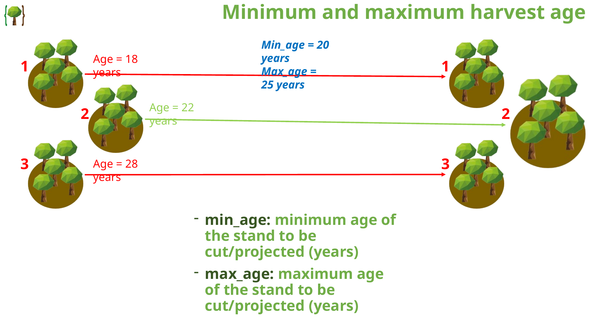
Individual tree models harvests
Individual tree harvest models operate by selecting and removing specific trees from the tree list according to their size (based on diameter at breast height dbh) and their species.
Thinning from below
Harvesting starts with the trees with the smallest diameter at breast height (dbh) in the plot and progresses upward through larger diameter classes until the target thinning percentage is fulfilled.
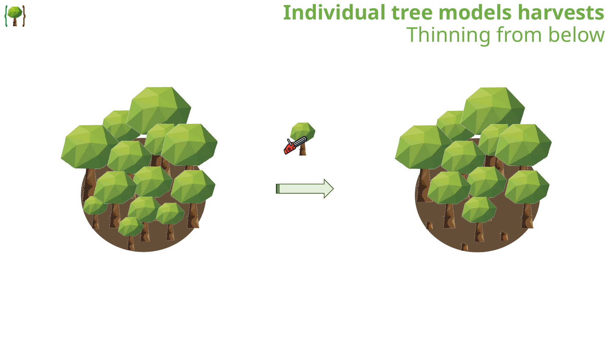
Thinning from above
Harvesting begins with the largest-diameter trees (dbh) in the plot and descends toward smaller diameter classes until reaching the specified intensity.
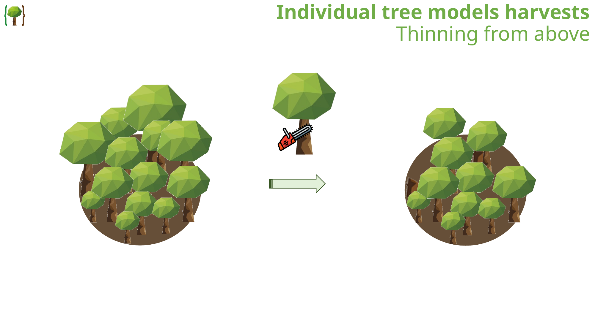
Systematic thinning
Harvesting is evenly distributed across all diameter classes, reducing the expansion factor (expan) of every tree in the plot by the same proportion.
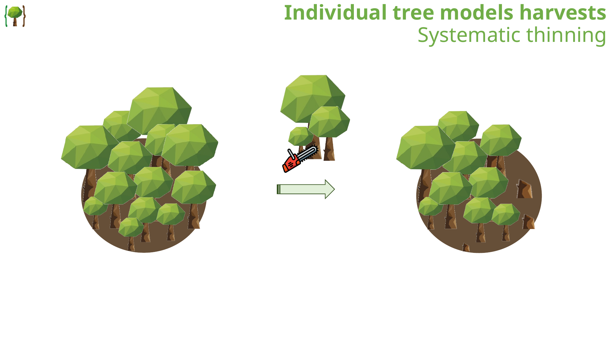
Semi-systematic thinning
Although not programmed as a separate standalone model in SIMANFOR, it can be simulated by combining systematic and selective thinnings within the same scenario. For example, a semi-systematic thinning with a total intensity of 20 % can be simulated by applying a 10 % systematic thinning (representing line or rack opening) immediately followed by a 10 % thinning from below (representing selection among the remaining trees).
Thinning (from below, from above or systematic) by species (mixed stands)
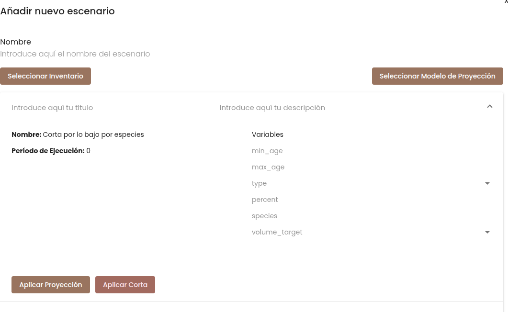
Allows targeting the harvest on a specific species in mixed stands using the following parameters:
species: Numerical species code according to the National Forest Inventory (IFN / SFNI, see the model documentation).volume_target: Reference scope for the thinning intensity percentage:- Plot: The percentage is calculated relative to the total plot accumulation (cutting only trees of the target species).
- Species: The percentage is calculated strictly relative to the standing stock of that target species within the plot.
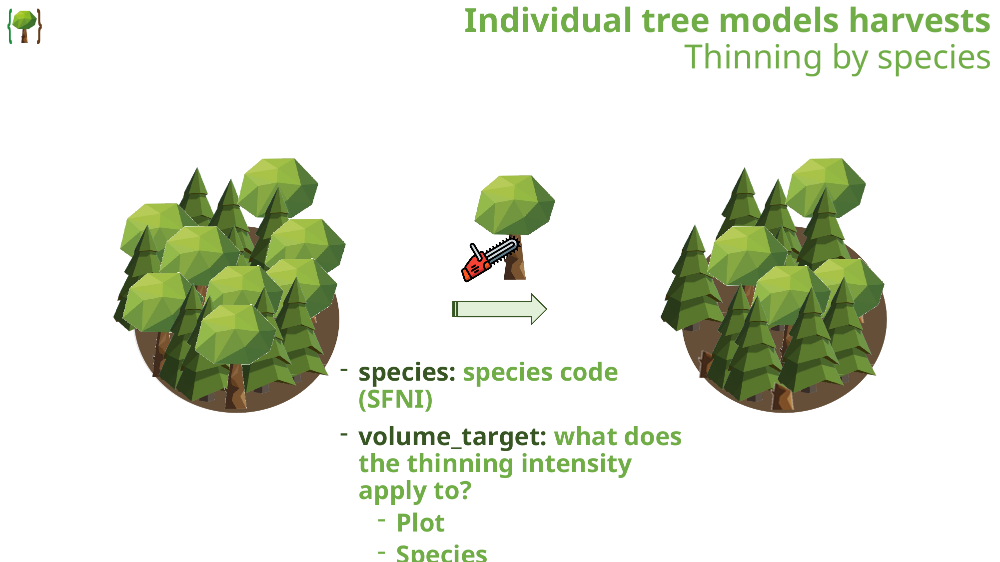
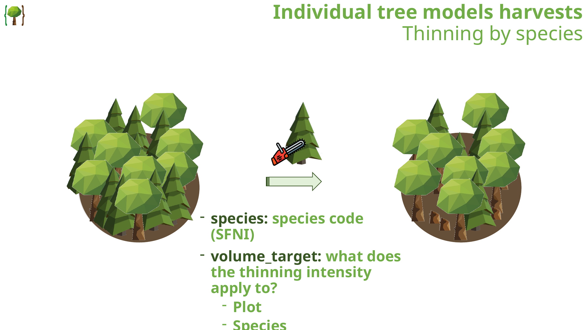
Thinning (systematic or from above) with future trees
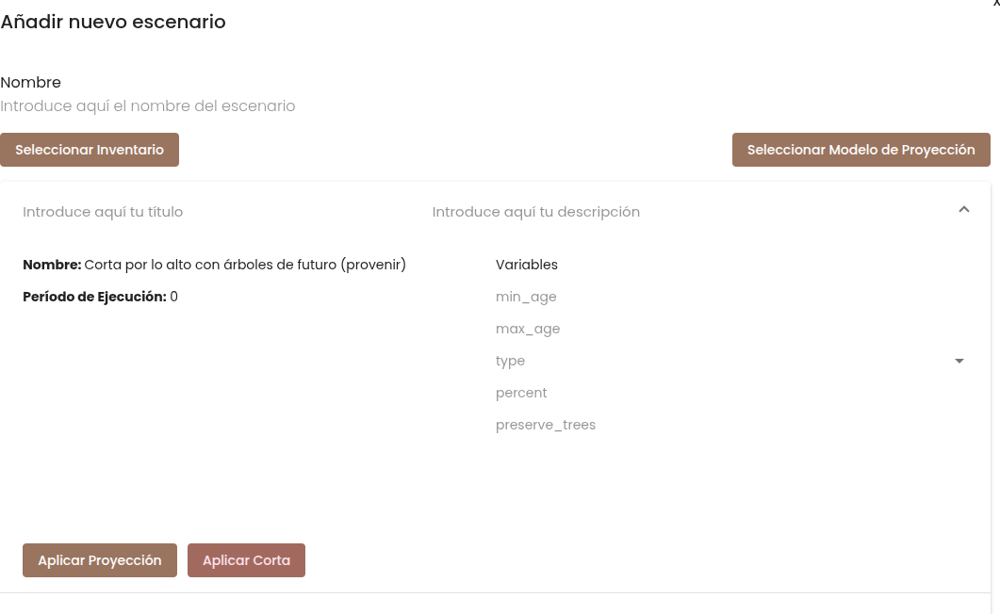
- Additional parameter:
preserve_trees(% of larger trees on which no action is to be taken, default is 15 %). - Behavior: A specified upper percentage of dominant or largest trees is protected (
preserve_trees). Thinning is then executed immediately on the next largest diameter classes below the protected crop trees.
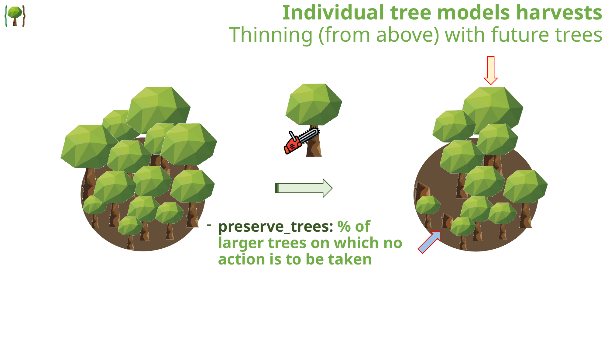
Thinning (systematic or from above) with future trees by species (mixed stands)
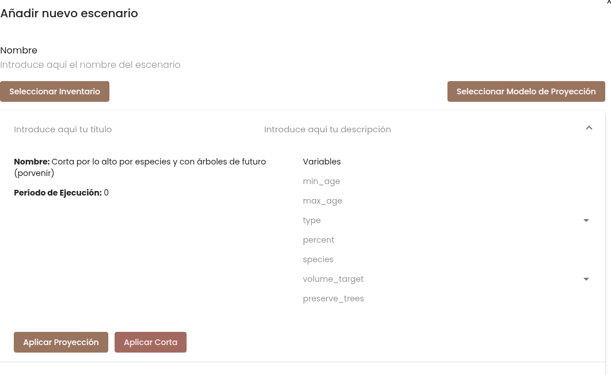
Combines the capabilities of the preceding thinning types, allowing users to configure target species (species), reference scope (volume_target), and percentage of crop trees to preserve (preserve_trees).
Stand models harvests
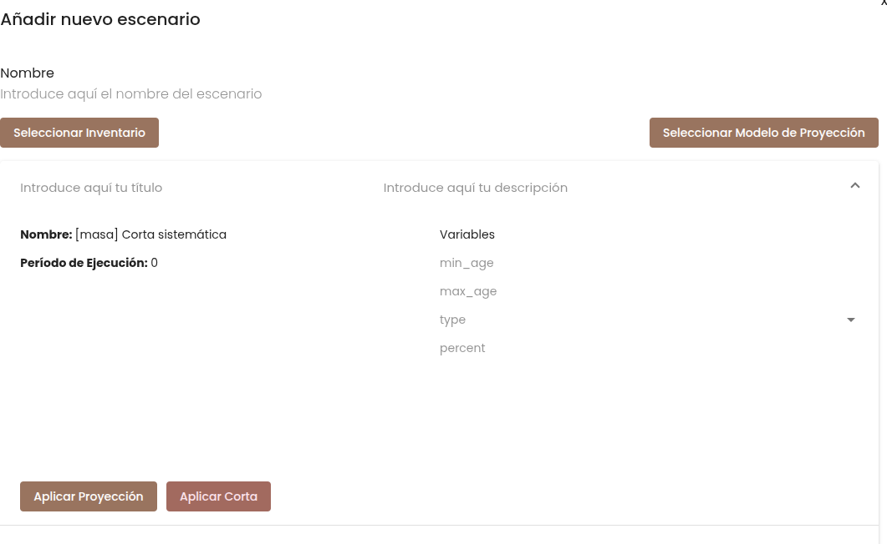
In simulations using aggregate stand models, individual tree lists are not present, so harvests are systematic (with exceptions such as SILVES models, which include specific models to simulate thinnings from below and above). In these models, the configuration is as follows:
- Harvest model:
[masa] Corta sistemática([stand] Systematic thinning) - Thinning criterion (
type):densidad(density),area_basimetrica(basal_area) orvolumen(volume) - Thinning intensity (
percent): Percentage to be harvested (0 to 100 %)
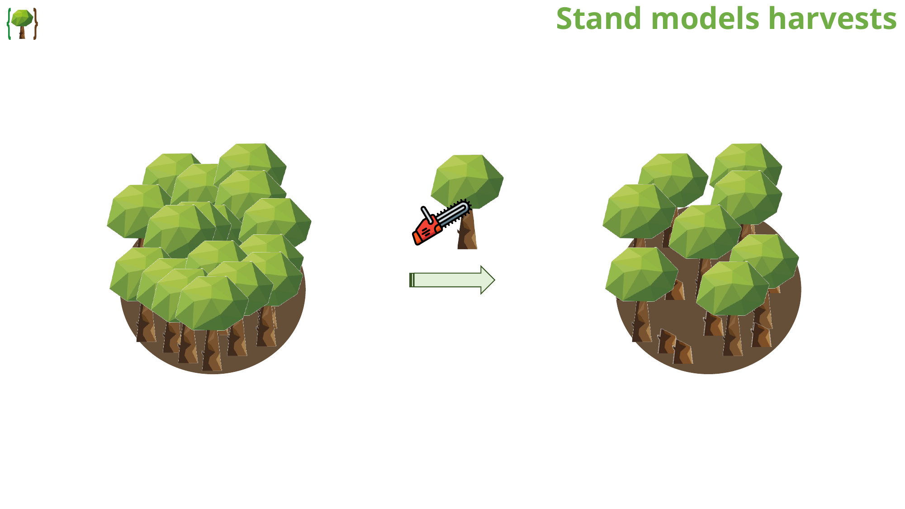
Summary of scenario parameters
| Parameter | Type | Description | Allowed values |
|---|---|---|---|
type |
Text / Integer | Thinning criterion | Density, Basal Area, Volume |
percent |
Integer | Thinning intensity | 0 - 100 (%) |
preserve_trees |
Integer | Percentage of dominant trees protected | 0 - 100 (%) |
species |
Integer | Target species code (IFN) | IFN code (e.g. 21, 24, 41) |
volume_target |
Text | Percentage calculation scope | Plot or Species |
min_age |
Integer | Minimum stand age to execute harvest | Years (e.g. 38) |
max_age |
Integer | Maximum stand age to execute harvest | Years (e.g. 42) |